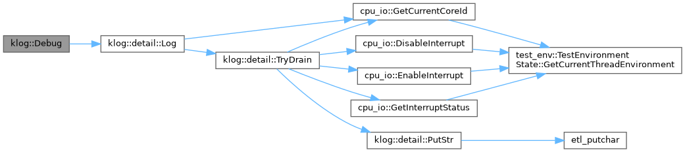
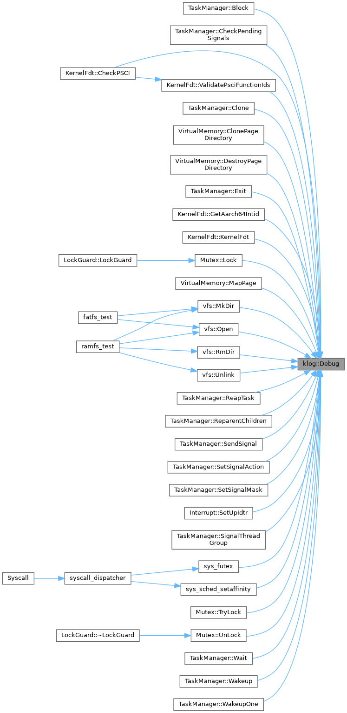
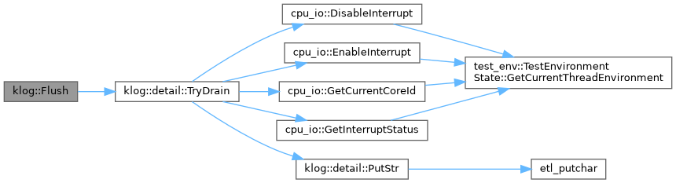
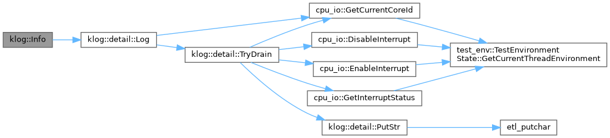
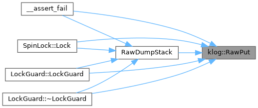
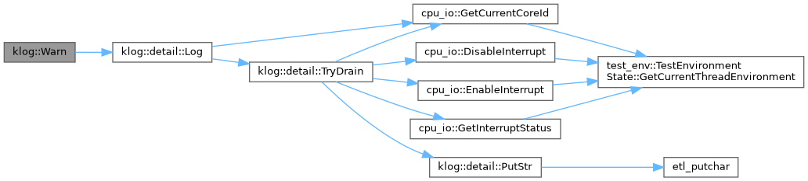
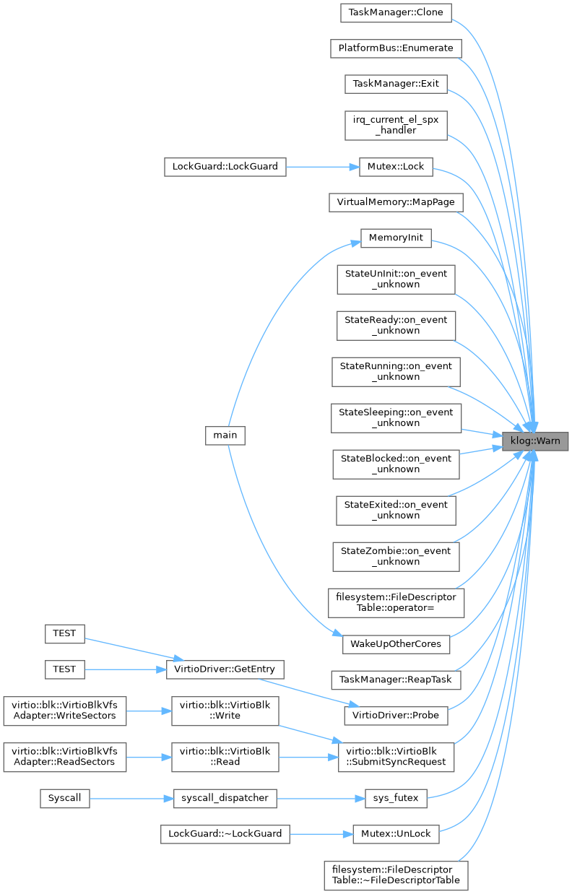

- Generated by
 1.9.8
1.9.8
|
SimpleKernel
|
Namespaces | |
| namespace | detail |
Functions | |
| template<typename... Args> | |
| auto | Debug (etl::format_string< Args... > fmt, Args &&... args) -> void |
| 以 DEBUG 级别记录日志（SIMPLEKERNEL_MIN_LOG_LEVEL > 0 时编译期消除） | |
| template<typename... Args> | |
| auto | Info (etl::format_string< Args... > fmt, Args &&... args) -> void |
| 以 INFO 级别记录日志 | |
| template<typename... Args> | |
| auto | Warn (etl::format_string< Args... > fmt, Args &&... args) -> void |
| 以 WARN 级别记录日志 | |
| template<typename... Args> | |
| auto | Err (etl::format_string< Args... > fmt, Args &&... args) -> void |
| 以 ERROR 级别记录日志 | |
| __always_inline auto | Flush () -> void |
| 强制将队列中所有日志条目输出至串口 | |
| __always_inline auto | RawPut (const char *msg) -> void |
| 绕过队列直接输出至串口（用于 panic 路径） | |
|
inline |
以 DEBUG 级别记录日志（SIMPLEKERNEL_MIN_LOG_LEVEL > 0 时编译期消除）
Definition at line 180 of file kernel_log.hpp.


|
inline |
以 ERROR 级别记录日志
Definition at line 207 of file kernel_log.hpp.
| __always_inline auto klog::Flush | ( | ) | -> void |
强制将队列中所有日志条目输出至串口
Definition at line 215 of file kernel_log.hpp.

|
inline |
以 INFO 级别记录日志
Definition at line 189 of file kernel_log.hpp.

| __always_inline auto klog::RawPut | ( | const char * | msg | ) | -> void |
绕过队列直接输出至串口（用于 panic 路径）
Definition at line 218 of file kernel_log.hpp.

|
inline |
以 WARN 级别记录日志
Definition at line 198 of file kernel_log.hpp.

